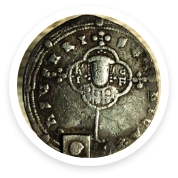
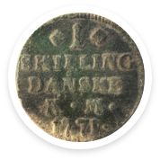
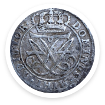
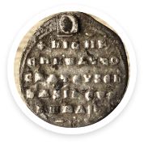
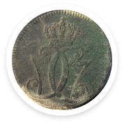
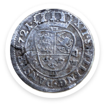

Detektorfund
Fra marker i Sønderjylland
Fra marker i Sønderjylland
En fibula (også kaldet bøjlenål) er et spænde, som ofte ligner en sikkerhedsnål, men som også kan have andre former. Fibulaer blev brugt fra bronze- til og med middelalder. Formålet med en fibula er at sammenfæste tekstiler, selv om de også har været brugt rent dekorativt.
Eftersom fibulaernes form ændrede sig over tid har man gennem typologiske studier kunnet lave en kronologisk oversigt, som i mange tilfælde kan bidrage med at datere gravfund.
Mange hundrede timers tålmodig detektorafsøg- ning har forøget mængden af metalfund fra oldtid og middelalder voldsomt. Adskillige genstande, som før kun kendtes i begrænset antal, har vist sig at være langt mere udbredte, både socialt og geografisk.
Interessen for fibler er herhjemme steget i takt med, at de i de seneste årtier er fundet i større og større antal. I Danmark har især en række forskere beskæftiget sig overordnet med nogle af fibeltyperne. Andre publikationer, der har behandlet fibler, drejer sig typisk om enkelte eller få fund. I den danske forskning er der en længere tradition for at beskæftige sig med emnet, af den enkle årsag at genstandstypen har været kendt længere tid og i større antal. Allerede i 1853 faldt fiblerne i arkæologernes søgelys. I nyere tid er stør- re sammenfattende arbejder blevet publiceret.
Alle mønter fra oldtid, vikingetid og middelalder (fra 1536 og før) er danefæ. Det samme glæder større sølvmønter, fra efter 1536. Mønter i skattefund uanset alder (flere mønter nedlagt sammen).
Byzantinsk, 936.
1-skilling, 1771.
12 skilling, 1721.
Byzantinsk, 936.
1-skilling, 1771.
12 skilling, 1721.
| Antal | Årstal | Fundtype | Danefæ | Materiale |
|---|---|---|---|---|
| 169 | 2019 | Dragttilbøhør | Kobberlegering | |
| 25 | 2019 | Redskab, værktøj | Jern | |
| 141 | 2020 | Mønt | Sølv | |
| 1165 | 2021 | Mønt | Kobberlegering | |
| 26 | 2021 | Fibula | Kobberlegering | |
| 2 | 2022 | Våben, militaria | Jern | |
| 12 | 2022 | Ubestemt |
Endelig kom den fine lille bog om et udvalg af museernes frivillige detektorfolk, der udfører et stort arbejde til gavn for den fælles fortid.

Tilmeld dig vores nyhedsbrev og modtag løbende info om nye rund.